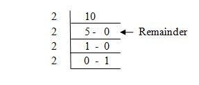

C Programming Operators
Operators:
Operators are used in programs to manipulate data and variables.
If an operator acts on single variable, then it is called ‘Unary Operator’.
If an operator acts on two variables then it is called ‘Binary operator’.
If an operator acts on three variables then it is called ‘Ternary operator’.
| Operator Category | Operator Symbols |
| Arithmetic Operators | +,-,*,/,% |
| Assignment Operators | =,+=,-=,*=,/=,%= |
| Unary Operators | -,++ and -- |
| Ternary Operators | ?: |
| Relational Operators | <,<=,>,>=,= =,!= |
| Logical Operators | &&,| |, ! |
| Bitwise Operators | ~,&,|,^,<<,>> |
| Miscellaneous Operators | sizeof(),&,*, , |
Arithmetic Operators
These operators are useful to perform basic arithmetic operations.
| Operator | Meaning |
| + | Addition |
| - | Subtraction |
| * | Multiplication |
| / | Division |
| % | Modulus Operator |
Assignment Operators
The purpose of assignment operator is to assign or store a vale into a variable.
int x=15; /* the value 15 is stored into x */
int x=y; /* Store y value into x */
from above examples,we can understand that always the right hand side value is stored into the left side variable.So, we cannot write something like this.
15=x; /*invalid, since variable is not present at left side */
Using the assignment operator (=), we can write expressions in a compact form also.
sal=sal+500 can be written as sal+=500
num=num-100 can be written as num-=100
p=p/100 can be written as p/=100
Unary Operators:
int x=7;
x=-x; /* negate the value of x and store into x */
Since x value is 7,-x will be -7. This will be stored into left side variable x so,after execution, x value will become -5.
int n=5 /*value of n is 5 */
++n; /*now n value becomes 6 */
we can write ++ symbol either before or after the variable.
n++; /* in this case also, n value will be incremented by 1 */
writitng ++ before a variable is called 'pre increment' and writing ++ after a varaible is called 'post increment'. Both will increase the value of the variable. But there is a difference in the timining of the increment.
In pre incrementation, the value of the variable is incremented first, any other operation is done next. In post incrementation, all operations are done first.
int n=8; /* value of n is 8 */
--n; /* now n value becomes 4 */
we can write -- symbol either before or after the variable.
n--; /* in this case also, n value will be decremented by 1 */
writitng -- before a variable is called 'pre decrementation' and writing -- after a varaible is called 'post decrementation'. Both will decrease the value of the variable by 1. But there is a difference in the timining of the increment.
In pre decrementation, the value of the variable is decremented first, any other operation is done next. In post decrementation, all operations are done first and demonstration is done at the end.
Ternary Operator( ?: )
This operator is called 'Ternary operator' because it acts on 3 expressions. It is also called as 'Conditional Operator'.
General Syntax: variable=expression1 ? expression2 : expression3;
if expression1 is true, then the value of expression2 will be evaluated and stored into the variable. If expression1 is false, then the value of expression3 will be stored into the variable.
if(expression)
variable=expression2;
else variable=expression3;
The preceding statement is called 'Conditional statement', because it performs a task depending on whether the condition is true or false.
max=(num1 > num2) ? num1 : num2;
In below example,if num1 is really greater than num2, then num1 vale is stored into max, otherwise num2 vale is stored into max. The same expression can be rewritten in C as:
if(num1>num2)
max=num1;
else max=num2;
Relational Operators
These Operators are useful to compare two quantities, to know whether a quantity is bigger or smaller than another one or not.
| Operator | Meaning |
| < | is less than |
| <= | is less than or equal to |
| > | is greater than |
| >= | is greater than or equal to |
| == | is equal to |
| != | is not equal to |
Logical Operators
Logical operators are used to join two or more conditions when we join two or more simple conditions, it becomes a compund condition.
| Operator | Meaning |
| && | Logical AND |
| || | Logical OR |
| ! | Logical NOT |
if(a == 1 && b == 2) printf("%d\t%d",a,b);
Here, && is used to combine two condtions; a == 1and b == 2.This means, a value should be 1 and also b value should be 2. Then only, the next printf() statement will be executed.
Bitwise Operators
Bitwise complement operator (~): This operator returns complement form of a number system. Converting 0s into 1s and vice versa is called complement.
int x=10;
~x=?
first convert 10 into binary number system. we get 0000 1010. To get the complement for this number, we convert 0s into 1s and vice versa. Thus we get 1111 0101. This is equal to -11 in decimal number system.So, ~x gives us the result -11.
| x | y | x & y |
| 0 | 0 | 0 |
| 0 | 1 | 0 |
| 1 | 0 | 0 |
| 1 | 1 | 1 |
Let us find the result of bitwise AND operation of two numbers 10 and 12.
x = 10 =0000 1010
y = 12 =0000 1100
-------------------------
x & y = 0000 1000 = 8 in decimal
| x | y | x & y |
| 0 | 0 | 0 |
| 0 | 1 | 1 |
| 1 | 0 | 1 |
| 1 | 1 | 1 |
Let us find the result of bitwise OR operation of two numbers 10 and 12.
x = 10 =0000 1010
y = 12 =0000 1100
-------------------------
x & y = 0000 1110 = 14 in decimal
| x | y | x & y |
| 0 | 0 | 0 |
| 0 | 1 | 1 |
| 1 | 0 | 0 |
| 1 | 1 | 0 |
Let us find the result of bitwise XOR operation of two numbers 10 and 12.
x = 10 =0000 1010
y = 12 =0000 1100
-------------------------
x & y = 0000 0110 = 6 in decimal
Program to understand operation of bitwise operators.
#include<stdio.h>
void main()
{
int x,y;
x=10;
y=12;
printf("\n~x=%d",(~x));
printf("\nx&y%d",(x&y));
printf("\nx|y%d",(x|y));
printf("\nx^y%d",(x^y));
printf("\nx<<y%d",(x<<2));
printf("\nx>>y%d",(x>>2));
}
Output:
~x= -11
x&y= 8
x|y= 14
x^y= 6
x<<2= 40
x>>2= 2
sizeof() Operator
This operator returns the size of a variable.
int num;
sizeof(num) returns 4 since the int type variable takes 4 byte of memory.
sizeof() can also be used with datatypes to know the size of a datatype.
Program to know how to use sizeof() operator.
#include<stdio.h>
void main()
{
int a;
long int b;
printf("\n size of a= %d",sizeof(a));
printf("\n size of b= %d",sizeof(b));
printf("\n size of int= %d",sizeof(int));
printf("\n size of long int= %d",sizeof(long));
}
Output:
size of a= 2
size of b= 4
size of int= 2
size of long int= 4
& Operator
It is used for alloting memory for the variable..
int x; /*allots 4 Bytes of memory for x */
The memory address of the variable can be known using & operator. it is also called 'address of' operator.
&x; /*memory address of x */
* Operator
It is useful to declare a pointer. A pointer is a variable that stores memory address. If x is a variabl, its memory address can be represented by &x.
int *x; /* p is a pointer of int type */
p=x; /*store memory address of x into p */
Now p has the memory address, we can also find the value of x through p. *p represents the value of x.
Pointer operator is used in 2 ways: to declare a pointer and to find the value of the variable which is pointed.
| Operator | Description | Associativity |
| () | Function call | Left to right |
| [] | Array element reference | Left to right |
| + | Unary plus | Right to left |
| - | Unary minus | Right to left |
| ++ | Increment | Right to left |
| -- | Decrement | Right to left |
| ! | Logical negation | Right to left |
| ~ | Ones complement | Right to left |
| * | Pointer reference | Right to left |
| & | Address | Right to left |
| sizeof | Size of an object | Right to left |
| (type) | Type cast | Right to left |
| * | Multiplication | Left to right |
| / | Division | Left to right |
| % | Modulus | Left to right |
| + | Addition | Left to right |
| - | Substraction | Left to right |
| << | left shift | Left to right |
| >> | Right shift | Left to right |
| < | Less than | Left to right |
| <= | Less than or equal to | Left to right |
| > | Greter than | Left to right |
| >= | Greater than or equal to | Left to right |
| == | Equality | Left to right |
| != | Inequality | Left to right |
| & | Bitwise AND | Left to right |
| ^ | Bitwise XOR | Left to right |
| | | Bitwise OR | Left to right |
| && | Logical AND | Left to right |
| || | Logical OR | Left to right |
| ?: | Conditional Expression | Right to left |
| , | Comma Operator | Left to right |